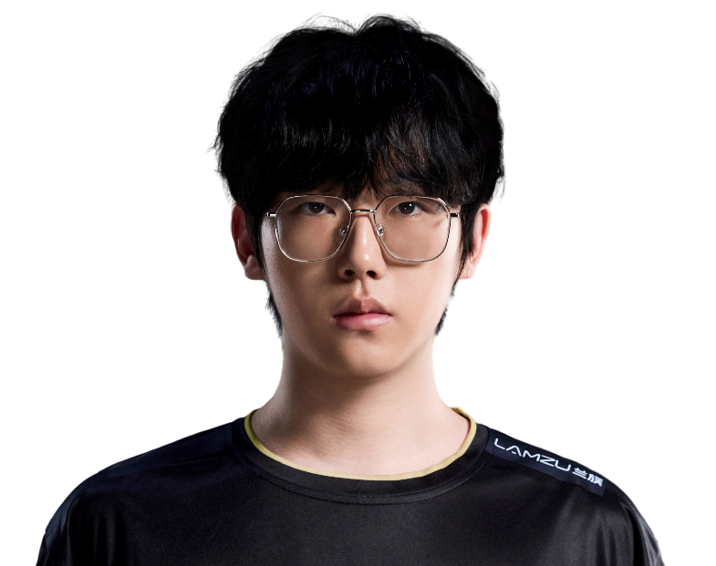

EDward Gaming / 郑永康
ZmjjKK.
ALL IN. EVERY ROUND.JettZmjjKK / 郑永康
ZmjjKK / EDG
ONE NAME.EVERY ROUND.ALL IN.
郑永康，EDward Gaming。
从每次选下英雄，到每次站上赛场。
ZmjjKK / 赛场影像MOMENTS
MOMENTS
THAT MATTER.
ZmjjKK.
EDward Gaming
每一瞬间，都是比赛的一部分。
Riot Games / 官方赛场影像
ZmjjKK / 职业英雄池
DIFFERENT AGENTS.
SAME PLAYER.
从最熟悉的英雄，看到每一种打法。捷风
Jett.
43% 全英雄使用占比
290职业出场地图
269.7平均战斗评分 ACS
1.28击杀 / 死亡 K:D
5,850总击杀
1,216首杀
VLR 全时期职业数据 · 2026-11-02 快照 · 出场单位为地图，使用占比不是胜率。查看原始统计 ↗
ZmjjKK / 比赛记录ONE PLAYER.
ONE PLAYER.
EVERY ROUND.
674职业地图
13,091总击杀
1.24全英雄 K/D
Champions 2026 Group Stage ⋅
Elim (B)
EDG / GE0 : 2+
Champions 2026 Group Stage ⋅
Opening (B)
EDG / LOUD0 : 2+
VCT 26: CN Stage 2 Play-Ins ⋅
LR3
EDG / JDG0 : 2+
VCT 26: CN Stage 2 Play-Ins ⋅
LR2
EDG / WOL2 : 1+
VCT 26: CN Stage 2 Play-Ins ⋅
UBQF
EDG / TEC1 : 2+
最近已收录系列赛；生涯总计由全英雄表求和，K/D 为总击杀除以总死亡。

下一位 / EDG 阵容